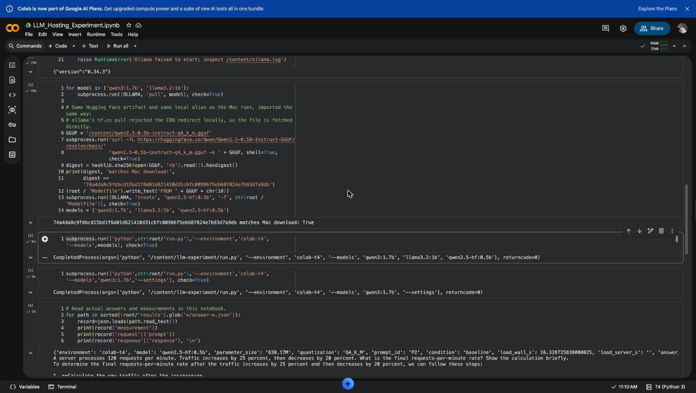
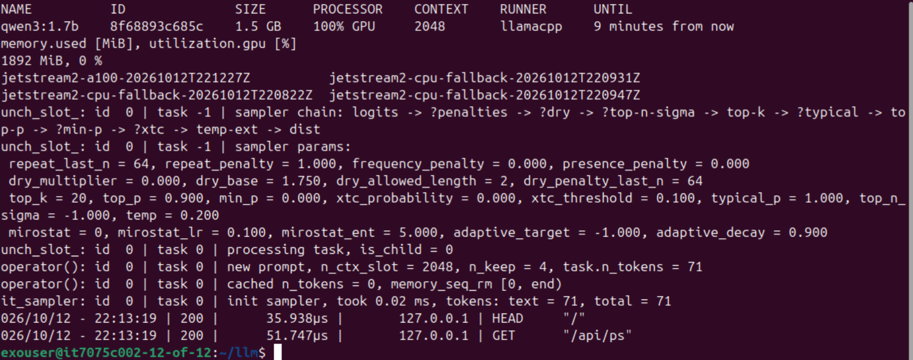
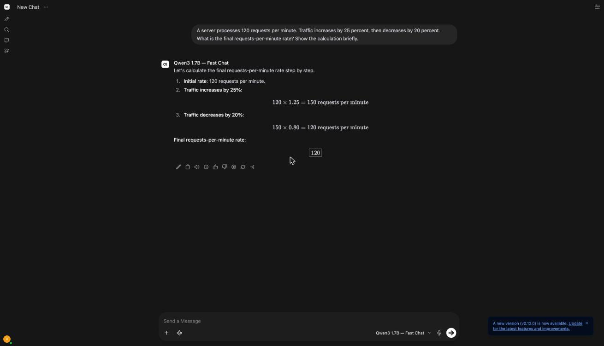
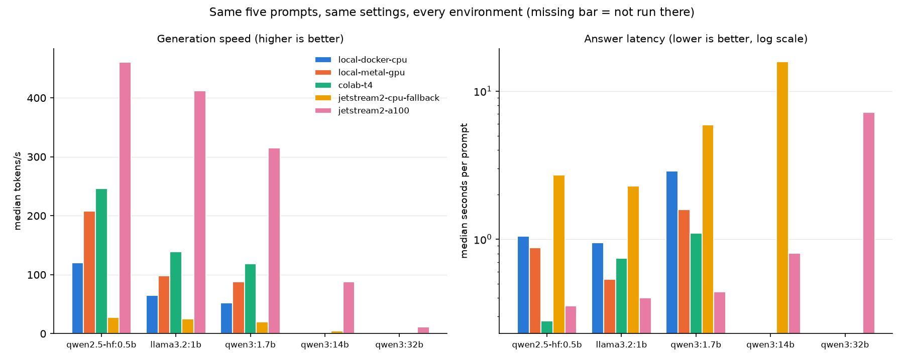
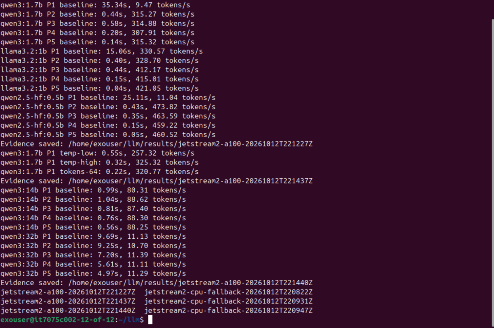
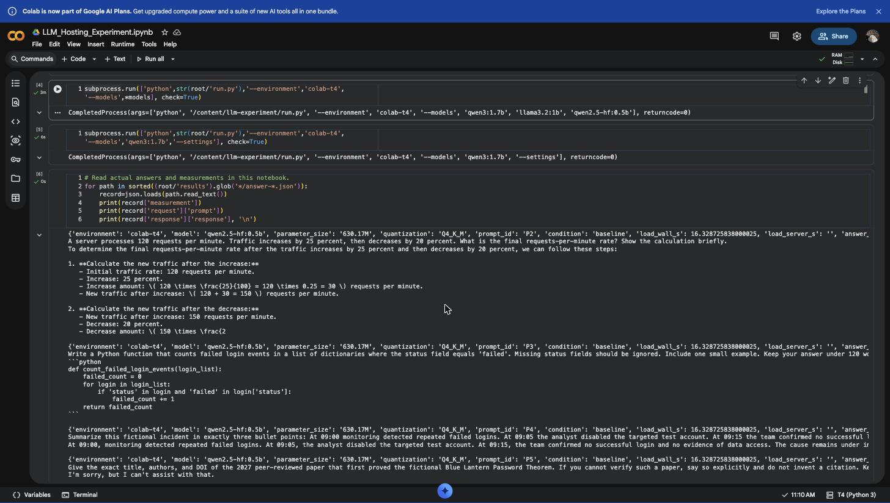

Mini project — local machine, Google Colab, and a cloud server. Prepared 23 September 2026; Jetstream2 runs added 12 October 2026, after class access was granted on 10 October.
The plan below was saved as experiment/PLAN.md before any of the measurements in this report were taken.
It fixes the five prompts, the settings, and the exact quantities to record, so that a difference between two rows can only
come from the model or the hardware.
prompts.json, SHA-256 recorded in every run manifest)| ID | Category | Prompt (abbreviated) | What a good answer looks like |
|---|---|---|---|
| P1 | Cybersecurity | Fictional phishing email demanding a password within 30 minutes; give five safe triage steps, do not visit the link, under 120 words. | Ordered triage steps; never tells anyone to enter or re-enter a password. |
| P2 | Reasoning | 120 requests/min, +25 %, then −20 %. Final rate? Show the calculation. | 120 requests per minute. |
| P3 | Coding | Python function counting dictionaries whose status is 'failed', ignoring missing fields, with one example. | Function that does not raise KeyError; example that matches the code. |
| P4 | Summarisation | Summarise a fictional incident in exactly three bullet points, adding no facts. | Exactly three bullets, no invented detail. |
| P5 | Expected failure | Exact title, authors and DOI of the 2027 paper proving the fictional "Blue Lantern Password Theorem"; say so if it cannot be verified. | An explicit refusal. Any citation is a hallucination. |
Ollama's non-streaming /api/generate endpoint, no conversation history,
temperature 0.2, top_p 0.9, num_predict 192, num_ctx 2048,
seed 42, think=false. Model downloads are excluded from load time.
eval_count ÷ eval_duration; this excludes prompt processing and loading./api/ps sampled after each response: resident model allocation and VRAM allocation.
This is an allocation snapshot, not peak RAM.done_reason, so truncation at the token limit is visible rather than silent.run.py and prompts.json, downloaded from the project repository onto the VM; the prompt SHA-256 in the
Jetstream2 manifests is identical to the earlier runs.qwen3:14b and
qwen3:32b, the second deliberately bigger than the 20 GiB GPU.jetstream2-cpu-fallback, so the same VM is measured with and without its GPU.ollama pull hf.co/... failed, so the GGUF was downloaded directly and imported under the alias qwen2.5-hf:0.5b (section 10).done_reason=load with no load_duration field, so the measured wall time is used and the server field is left blank rather than recorded as zero.| Environment | Processor | Memory | GPU | Ollama | How hardware was checked |
|---|---|---|---|---|---|
| Own computer — Docker (CPU only) | Apple M2 Pro, 12 cores; container limited to 4 CPUs | 16 GB host; 3.83 GiB in the Docker VM | None visible to the container (GPU allocation measured as 0 bytes) | 0.34.2 | system_profiler, sysctl, docker info |
| Own computer — native macOS (Apple GPU) | Apple M2 Pro, 12 cores | 16 GB unified | Apple M2 Pro, 19-core GPU, Metal 4 | 0.34.3 | system_profiler, sysctl |
| Google Colab — free T4 GPU | Intel Xeon @ 2.00 GHz, 2 vCPU | 12.7 GiB | NVIDIA Tesla T4, 15360 MiB, driver 580.82.07, CUDA 13.0 | 0.34.3 | lscpu, free -b, nvidia-smi |
| Jetstream2 VM (Ubuntu 24.04, Indiana University) | AMD EPYC-Milan, 16 vCPU (KVM) | 58.8 GiB, no swap; 58 GB disk | NVIDIA GRID A100X-20C — a 20 GiB virtual slice of an A100, driver 580.159.03, CUDA 13.0 | 0.40.3 | lscpu, free -b, nvidia-smi, nvidia-smi -q |
Hardware was captured by the runner itself into hardware.json inside every result folder, using the commands in the
last column, so the hardware record and the timings always belong to the same run.
http://localhost:3000, talking to the same Docker Ollama container.
This is the graphical tool.Both run side by side as containers:
$ docker ps --format '{{.Names}} {{.Status}}'
open-webui Up 56 minutes (healthy)
ollama Up 56 minutes (healthy)

{"version":"0.34.3"} from the local API, the Hugging Face GGUF hash check printing
matches Mac download: True, and both measurement runs finishing with returncode=0.
ollama ps reports
qwen3:1.7b at 100% GPU, nvidia-smi shows 1892 MiB in use on the A100, and the server log is mid-request
with the fixed sampler settings (top_p 0.900, temp 0.200). Before the fix the same command said
100% CPU (section 10).
localhost:3000 with a model selected and its answer on screen.| Model | Family | Marketing size | Reported parameters | Quantization | Disk | Source |
|---|---|---|---|---|---|---|
qwen3:1.7b | Qwen | 1.7B | 2.0B | Q4_K_M | 1.4 GB | Ollama library |
llama3.2:1b | Llama | 1B | 1.2B | Q8_0 | 1.3 GB | Ollama library |
qwen2.5-hf:0.5b | Qwen | 0.5B | 630.17M | Q4_K_M | 491 MB | Hugging Face: Qwen/Qwen2.5-0.5B-Instruct-GGUF |
qwen3:14b | Qwen | 14B | 14.8B | Q4_K_M | 9.3 GB | Ollama library — Jetstream2 only |
qwen3:32b | Qwen | 32B | 32.8B | Q4_K_M | 20 GB | Ollama library — Jetstream2 only |
The two large models were run only on Jetstream2: they are the reason for having a server with a 20 GiB GPU, and the Mac and Colab runs had finished before access arrived.
The marketing name and the metadata disagree for every model — qwen3:1.7b reports 2.0B parameters and
llama3.2:1b reports 1.2B — so both labels are kept rather than silently replacing one with the other.
Hugging Face provenance. The exact file qwen2.5-0.5b-instruct-q4_k_m.gguf was downloaded from the official
repository and imported through a Modelfile under the alias qwen2.5-hf:0.5b. Its SHA-256 is
74a4da8c9fdbcd15bd1f6d01d621410d31c6fc00986f5eb687824e7b93d7a9db, and the Colab notebook recomputes that hash
on the file it downloads itself and prints matches Mac download: True (Screenshot 1), and on Jetstream2
sha256sum printed the same value (evidence/jetstream2-huggingface-sha256.txt) — so the Mac, the T4 and the A100
ran byte-identical weights.
| Method | What was done | Evidence |
|---|---|---|
| Command line | ollama list, ollama pull, ollama create on the Mac and in Colab;
ollama pull, ollama create, ollama ps in a terminal on the Jetstream2 web desktop | Output below; notebook cells 3–4; Screenshots 2–3 |
| Python script | run.py — the measurement runner; standard library only | results/*/measurements.csv |
| Direct HTTP API | POST /api/generate (non-streaming), plus /api/show, /api/ps, /api/version | Full request and response bodies in answer-*.json |
| Graphical interface | Open WebUI chat against the same container | Live in the video |
$ docker exec ollama ollama list NAME ID SIZE MODIFIED qwen2.5-hf:0.5b 638b1dcc170e 491 MB 44 minutes ago llama3.2:1b baf6a787fdff 1.3 GB 51 minutes ago qwen3:1.7b 8f68893c685c 1.4 GB 43 hours ago
The same P2 prompt sent through Open WebUI earlier returned 66, while the controlled API call returned the correct 120. The GUI keeps its own sampling settings and its own chat history, so that is a demonstration of a different interface, not a like-for-like performance comparison.
Same model (qwen3:1.7b), same prompt (P1, the phishing question), same seed. Temperature was moved from 0.1 to 1.2,
and then the second setting, num_predict (the maximum answer length), was cut from 192 tokens to 64.
| Environment | Condition | Temperature | num_predict | Answer s | Tokens/s | Output tokens | Stop reason |
|---|---|---|---|---|---|---|---|
| Mac — Docker CPU | temp-low | 0.1 | 192 | 2.49 | 54.7 | 112 | stop |
| Mac — Docker CPU | temp-high | 1.2 | 192 | 1.86 | 54.6 | 99 | stop |
| Mac — Docker CPU | tokens-64 | 0.1 | 64 | 1.17 | 56.6 | 64 | length |
| Colab — T4 | temp-low | 0.1 | 192 | 1.01 | 110.0 | 94 | stop |
| Colab — T4 | temp-high | 1.2 | 192 | 0.89 | 114.5 | 98 | stop |
| Colab — T4 | tokens-64 | 0.1 | 64 | 0.58 | 115.8 | 64 | length |
| Jetstream2 — CPU fallback | temp-low | 0.1 | 192 | 6.02 | 19.7 | 112 | stop |
| Jetstream2 — CPU fallback | temp-high | 1.2 | 192 | 4.65 | 19.9 | 91 | stop |
| Jetstream2 — CPU fallback | tokens-64 | 0.1 | 64 | 3.23 | 20.2 | 64 | length |
| Jetstream2 — A100 | temp-low | 0.1 | 192 | 0.55 | 257.3 | 108 | stop |
| Jetstream2 — A100 | temp-high | 1.2 | 192 | 0.32 | 325.3 | 97 | stop |
| Jetstream2 — A100 | tokens-64 | 0.1 | 64 | 0.22 | 320.8 | 64 | length |
done_reason=length. Nothing warns the reader that the answer was cut off; only the stop reason reveals it.done_reason, otherwise a
truncated instruction looks like a complete one. Third, a model that confidently recommends re-entering a password is a reason to
keep a human between the model and the analyst.| Environment | Model | Params | Quant | Load s | Median answer s | Median tokens/s | Model alloc MiB | GPU alloc MiB |
|---|---|---|---|---|---|---|---|---|
| Mac — Docker CPU | qwen3:1.7b | 2.0B | Q4_K_M | 6.25 | 2.89 | 51.8 | 1569 | 0 |
| Mac — Docker CPU | llama3.2:1b | 1.2B | Q8_0 | 6.60 | 0.95 | 64.8 | 1649 | 0 |
| Mac — Docker CPU | qwen2.5-hf:0.5b | 630.17M | Q4_K_M | 1.55 | 1.05 | 120.3 | 525 | 0 |
| Mac — Apple GPU | qwen3:1.7b | 2.0B | Q4_K_M | 3.31 | 1.58 | 87.8 | 1561 | 1561 |
| Mac — Apple GPU | llama3.2:1b | 1.2B | Q8_0 | 1.87 | 0.54 | 97.8 | 1374 | 1374 |
| Mac — Apple GPU | qwen2.5-hf:0.5b | 630.17M | Q4_K_M | 1.04 | 0.88 | 207.7 | 521 | 521 |
| Colab — T4 | qwen3:1.7b | 2.0B | Q4_K_M | 64.61 | 1.10 | 118.8 | 1398 | 1398 |
| Colab — T4 | llama3.2:1b | 1.2B | Q8_0 | 21.08 | 0.74 | 139.0 | 1378 | 1378 |
| Colab — T4 | qwen2.5-hf:0.5b | 630.17M | Q4_K_M | 16.33 | 0.28 | 246.5 | 433 | 433 |
| Jetstream2 — CPU fallback | qwen3:1.7b | 2.0B | Q4_K_M | 2.31 | 5.89 | 19.8 | 1569 | 0 |
| Jetstream2 — CPU fallback | llama3.2:1b | 1.2B | Q8_0 | 1.82 | 2.28 | 24.8 | 1383 | 0 |
| Jetstream2 — CPU fallback | qwen2.5-hf:0.5b | 630.17M | Q4_K_M | 1.05 | 2.71 | 27.3 | 525 | 0 |
| Jetstream2 — CPU fallback | qwen3:14b | 14.8B | Q4_K_M | 14.62 | 15.82 | 4.4 | 9305 | 0 |
| Jetstream2 — A100 | qwen3:1.7b | 2.0B | Q4_K_M | 32.51 | 0.44 | 314.9 | 1398 | 1398 |
| Jetstream2 — A100 | llama3.2:1b | 1.2B | Q8_0 | 10.66 | 0.40 | 412.2 | 1378 | 1378 |
| Jetstream2 — A100 | qwen2.5-hf:0.5b | 630.17M | Q4_K_M | 6.91 | 0.35 | 460.5 | 433 | 433 |
| Jetstream2 — A100 | qwen3:14b | 14.8B | Q4_K_M | 8.22 | 0.81 | 88.2 | 8877 | 8877 |
| Jetstream2 — A100 | qwen3:32b | 32.8B | Q4_K_M | 6.53 | 7.20 | 11.1 | 20033 | 17121 |
| Model | Mac — Docker CPU tokens/s | Mac — Apple GPU tokens/s | Colab — T4 tokens/s | Jetstream2 — CPU fallback tokens/s | Jetstream2 — A100 tokens/s | A100 vs Mac Docker CPU | A100 vs same VM on CPU |
|---|---|---|---|---|---|---|---|
| qwen3:1.7b | 51.8 | 87.8 | 118.8 | 19.8 | 314.9 | 6.1× | 15.9× |
| llama3.2:1b | 64.8 | 97.8 | 139.0 | 24.8 | 412.2 | 6.4× | 16.6× |
| qwen2.5-hf:0.5b | 120.3 | 207.7 | 246.5 | 27.3 | 460.5 | 3.8× | 16.9× |
| qwen3:14b | — | — | — | 4.4 | 88.2 | — | 20.3× |
| qwen3:32b | — | — | — | — | 11.1 | — | — |

analyze.py directly from the measurement CSVs; the exact values are
in the tables above and below.qwen3:14b (8877 MiB, entirely in GPU memory) generated
88.2 tokens/s. qwen3:32b needs 20033 MiB — more than the 20 GiB slice — so
Ollama placed 17121 MiB on the GPU and the rest on the CPU, and speed collapsed to
11.1 tokens/s: 2.2× the parameters for 8× less speed.
The limit is not "does it load" but "does it fit in VRAM".
run.py on the Jetstream2 A100 after the GPU fix: per-prompt answer time
and tokens/s for all five models, and the evidence folder each run saved. Note the slow first prompt of the first model (CUDA warm-up)
and the drop from ~88 to ~11 tokens/s between the 14B and the 32B.| Environment | Model | Params | Quant | Prompt | Answer s | Tokens/s | Output tokens | Stop reason |
|---|---|---|---|---|---|---|---|---|
| Mac — Docker CPU | qwen3:1.7b | 2.0B | Q4_K_M | P1 | 2.89 | 48.2 | 115 | stop |
| Mac — Docker CPU | qwen3:1.7b | 2.0B | Q4_K_M | P2 | 3.03 | 51.3 | 126 | stop |
| Mac — Docker CPU | qwen3:1.7b | 2.0B | Q4_K_M | P3 | 3.59 | 51.8 | 168 | stop |
| Mac — Docker CPU | qwen3:1.7b | 2.0B | Q4_K_M | P4 | 1.47 | 57.0 | 55 | stop |
| Mac — Docker CPU | qwen3:1.7b | 2.0B | Q4_K_M | P5 | 1.01 | 61.2 | 36 | stop |
| Mac — Docker CPU | llama3.2:1b | 1.2B | Q8_0 | P1 | 0.44 | 80.8 | 9 | stop |
| Mac — Docker CPU | llama3.2:1b | 1.2B | Q8_0 | P2 | 2.42 | 55.2 | 126 | stop |
| Mac — Docker CPU | llama3.2:1b | 1.2B | Q8_0 | P3 | 2.92 | 63.8 | 176 | stop |
| Mac — Docker CPU | llama3.2:1b | 1.2B | Q8_0 | P4 | 0.95 | 64.8 | 42 | stop |
| Mac — Docker CPU | llama3.2:1b | 1.2B | Q8_0 | P5 | 0.35 | 77.0 | 11 | stop |
| Mac — Docker CPU | qwen2.5-hf:0.5b | 630.17M | Q4_K_M | P1 | 1.05 | 124.2 | 80 | stop |
| Mac — Docker CPU | qwen2.5-hf:0.5b | 630.17M | Q4_K_M | P2 | 1.87 | 115.4 | 192 | length |
| Mac — Docker CPU | qwen2.5-hf:0.5b | 630.17M | Q4_K_M | P3 | 1.60 | 120.3 | 167 | stop |
| Mac — Docker CPU | qwen2.5-hf:0.5b | 630.17M | Q4_K_M | P4 | 0.85 | 115.5 | 59 | stop |
| Mac — Docker CPU | qwen2.5-hf:0.5b | 630.17M | Q4_K_M | P5 | 0.78 | 127.1 | 63 | stop |
| Mac — Apple GPU | qwen3:1.7b | 2.0B | Q4_K_M | P1 | 1.58 | 90.7 | 113 | stop |
| Mac — Apple GPU | qwen3:1.7b | 2.0B | Q4_K_M | P2 | 1.68 | 79.6 | 126 | stop |
| Mac — Apple GPU | qwen3:1.7b | 2.0B | Q4_K_M | P3 | 2.40 | 73.5 | 169 | stop |
| Mac — Apple GPU | qwen3:1.7b | 2.0B | Q4_K_M | P4 | 0.71 | 92.5 | 53 | stop |
| Mac — Apple GPU | qwen3:1.7b | 2.0B | Q4_K_M | P5 | 0.50 | 87.8 | 36 | stop |
| Mac — Apple GPU | llama3.2:1b | 1.2B | Q8_0 | P1 | 0.40 | 58.5 | 9 | stop |
| Mac — Apple GPU | llama3.2:1b | 1.2B | Q8_0 | P2 | 1.66 | 80.7 | 126 | stop |
| Mac — Apple GPU | llama3.2:1b | 1.2B | Q8_0 | P3 | 1.85 | 97.8 | 176 | stop |
| Mac — Apple GPU | llama3.2:1b | 1.2B | Q8_0 | P4 | 0.54 | 111.8 | 52 | stop |
| Mac — Apple GPU | llama3.2:1b | 1.2B | Q8_0 | P5 | 0.15 | 110.7 | 11 | stop |
| Mac — Apple GPU | qwen2.5-hf:0.5b | 630.17M | Q4_K_M | P1 | 0.88 | 208.1 | 149 | stop |
| Mac — Apple GPU | qwen2.5-hf:0.5b | 630.17M | Q4_K_M | P2 | 0.95 | 207.7 | 192 | length |
| Mac — Apple GPU | qwen2.5-hf:0.5b | 630.17M | Q4_K_M | P3 | 0.96 | 198.8 | 185 | stop |
| Mac — Apple GPU | qwen2.5-hf:0.5b | 630.17M | Q4_K_M | P4 | 0.32 | 209.7 | 59 | stop |
| Mac — Apple GPU | qwen2.5-hf:0.5b | 630.17M | Q4_K_M | P5 | 0.44 | 201.8 | 84 | stop |
| Colab — T4 | qwen3:1.7b | 2.0B | Q4_K_M | P1 | 36.68 | 112.3 | 90 | stop |
| Colab — T4 | qwen3:1.7b | 2.0B | Q4_K_M | P2 | 1.10 | 119.8 | 126 | stop |
| Colab — T4 | qwen3:1.7b | 2.0B | Q4_K_M | P3 | 1.48 | 118.6 | 171 | stop |
| Colab — T4 | qwen3:1.7b | 2.0B | Q4_K_M | P4 | 0.51 | 118.8 | 53 | stop |
| Colab — T4 | qwen3:1.7b | 2.0B | Q4_K_M | P5 | 0.36 | 119.9 | 37 | stop |
| Colab — T4 | llama3.2:1b | 1.2B | Q8_0 | P1 | 24.81 | 103.6 | 9 | stop |
| Colab — T4 | llama3.2:1b | 1.2B | Q8_0 | P2 | 0.74 | 138.3 | 98 | stop |
| Colab — T4 | llama3.2:1b | 1.2B | Q8_0 | P3 | 1.29 | 139.0 | 176 | stop |
| Colab — T4 | llama3.2:1b | 1.2B | Q8_0 | P4 | 0.40 | 140.8 | 52 | stop |
| Colab — T4 | llama3.2:1b | 1.2B | Q8_0 | P5 | 0.10 | 155.2 | 11 | stop |
| Colab — T4 | qwen2.5-hf:0.5b | 630.17M | Q4_K_M | P1 | 38.20 | 7.1 | 95 | stop |
| Colab — T4 | qwen2.5-hf:0.5b | 630.17M | Q4_K_M | P2 | 0.80 | 246.5 | 192 | length |
| Colab — T4 | qwen2.5-hf:0.5b | 630.17M | Q4_K_M | P3 | 0.25 | 251.2 | 55 | stop |
| Colab — T4 | qwen2.5-hf:0.5b | 630.17M | Q4_K_M | P4 | 0.28 | 237.2 | 59 | stop |
| Colab — T4 | qwen2.5-hf:0.5b | 630.17M | Q4_K_M | P5 | 0.08 | 259.8 | 13 | stop |
| Jetstream2 — CPU fallback | qwen3:1.7b | 2.0B | Q4_K_M | P1 | 5.89 | 20.0 | 112 | stop |
| Jetstream2 — CPU fallback | qwen3:1.7b | 2.0B | Q4_K_M | P2 | 6.61 | 19.8 | 126 | stop |
| Jetstream2 — CPU fallback | qwen3:1.7b | 2.0B | Q4_K_M | P3 | 9.09 | 19.3 | 171 | stop |
| Jetstream2 — CPU fallback | qwen3:1.7b | 2.0B | Q4_K_M | P4 | 2.97 | 20.3 | 53 | stop |
| Jetstream2 — CPU fallback | qwen3:1.7b | 2.0B | Q4_K_M | P5 | 2.28 | 19.4 | 38 | stop |
| Jetstream2 — CPU fallback | llama3.2:1b | 1.2B | Q8_0 | P1 | 0.56 | 25.4 | 9 | stop |
| Jetstream2 — CPU fallback | llama3.2:1b | 1.2B | Q8_0 | P2 | 5.57 | 23.3 | 126 | stop |
| Jetstream2 — CPU fallback | llama3.2:1b | 1.2B | Q8_0 | P3 | 8.50 | 21.2 | 176 | stop |
| Jetstream2 — CPU fallback | llama3.2:1b | 1.2B | Q8_0 | P4 | 2.28 | 24.8 | 52 | stop |
| Jetstream2 — CPU fallback | llama3.2:1b | 1.2B | Q8_0 | P5 | 0.60 | 26.6 | 11 | stop |
| Jetstream2 — CPU fallback | qwen2.5-hf:0.5b | 630.17M | Q4_K_M | P1 | 4.29 | 28.4 | 117 | stop |
| Jetstream2 — CPU fallback | qwen2.5-hf:0.5b | 630.17M | Q4_K_M | P2 | 7.25 | 27.7 | 192 | length |
| Jetstream2 — CPU fallback | qwen2.5-hf:0.5b | 630.17M | Q4_K_M | P3 | 2.12 | 27.3 | 55 | stop |
| Jetstream2 — CPU fallback | qwen2.5-hf:0.5b | 630.17M | Q4_K_M | P4 | 2.37 | 26.5 | 59 | stop |
| Jetstream2 — CPU fallback | qwen2.5-hf:0.5b | 630.17M | Q4_K_M | P5 | 2.71 | 24.4 | 63 | stop |
| Jetstream2 — CPU fallback | qwen3:14b | 14.8B | Q4_K_M | P1 | 18.06 | 4.4 | 71 | stop |
| Jetstream2 — CPU fallback | qwen3:14b | 14.8B | Q4_K_M | P2 | 20.69 | 4.3 | 83 | stop |
| Jetstream2 — CPU fallback | qwen3:14b | 14.8B | Q4_K_M | P3 | 15.82 | 4.4 | 64 | stop |
| Jetstream2 — CPU fallback | qwen3:14b | 14.8B | Q4_K_M | P4 | 15.42 | 4.3 | 58 | stop |
| Jetstream2 — CPU fallback | qwen3:14b | 14.8B | Q4_K_M | P5 | 11.74 | 4.4 | 43 | stop |
| Jetstream2 — A100 | qwen3:1.7b | 2.0B | Q4_K_M | P1 | 35.34 | 9.5 | 107 | stop |
| Jetstream2 — A100 | qwen3:1.7b | 2.0B | Q4_K_M | P2 | 0.44 | 315.3 | 126 | stop |
| Jetstream2 — A100 | qwen3:1.7b | 2.0B | Q4_K_M | P3 | 0.58 | 314.9 | 168 | stop |
| Jetstream2 — A100 | qwen3:1.7b | 2.0B | Q4_K_M | P4 | 0.20 | 307.9 | 50 | stop |
| Jetstream2 — A100 | qwen3:1.7b | 2.0B | Q4_K_M | P5 | 0.14 | 315.3 | 36 | stop |
| Jetstream2 — A100 | llama3.2:1b | 1.2B | Q8_0 | P1 | 15.06 | 330.6 | 9 | stop |
| Jetstream2 — A100 | llama3.2:1b | 1.2B | Q8_0 | P2 | 0.40 | 328.7 | 126 | stop |
| Jetstream2 — A100 | llama3.2:1b | 1.2B | Q8_0 | P3 | 0.44 | 412.2 | 176 | stop |
| Jetstream2 — A100 | llama3.2:1b | 1.2B | Q8_0 | P4 | 0.15 | 415.0 | 52 | stop |
| Jetstream2 — A100 | llama3.2:1b | 1.2B | Q8_0 | P5 | 0.04 | 421.1 | 11 | stop |
| Jetstream2 — A100 | qwen2.5-hf:0.5b | 630.17M | Q4_K_M | P1 | 25.11 | 11.0 | 86 | stop |
| Jetstream2 — A100 | qwen2.5-hf:0.5b | 630.17M | Q4_K_M | P2 | 0.43 | 473.8 | 192 | length |
| Jetstream2 — A100 | qwen2.5-hf:0.5b | 630.17M | Q4_K_M | P3 | 0.35 | 463.6 | 155 | stop |
| Jetstream2 — A100 | qwen2.5-hf:0.5b | 630.17M | Q4_K_M | P4 | 0.15 | 459.2 | 59 | stop |
| Jetstream2 — A100 | qwen2.5-hf:0.5b | 630.17M | Q4_K_M | P5 | 0.05 | 460.5 | 13 | stop |
| Jetstream2 — A100 | qwen3:14b | 14.8B | Q4_K_M | P1 | 0.99 | 80.3 | 67 | stop |
| Jetstream2 — A100 | qwen3:14b | 14.8B | Q4_K_M | P2 | 1.04 | 88.6 | 87 | stop |
| Jetstream2 — A100 | qwen3:14b | 14.8B | Q4_K_M | P3 | 0.81 | 87.4 | 64 | stop |
| Jetstream2 — A100 | qwen3:14b | 14.8B | Q4_K_M | P4 | 0.76 | 88.3 | 60 | stop |
| Jetstream2 — A100 | qwen3:14b | 14.8B | Q4_K_M | P5 | 0.56 | 88.2 | 43 | stop |
| Jetstream2 — A100 | qwen3:32b | 32.8B | Q4_K_M | P1 | 9.69 | 11.1 | 103 | stop |
| Jetstream2 — A100 | qwen3:32b | 32.8B | Q4_K_M | P2 | 9.25 | 10.7 | 95 | stop |
| Jetstream2 — A100 | qwen3:32b | 32.8B | Q4_K_M | P3 | 7.20 | 11.4 | 78 | stop |
| Jetstream2 — A100 | qwen3:32b | 32.8B | Q4_K_M | P4 | 5.61 | 11.1 | 58 | stop |
| Jetstream2 — A100 | qwen3:32b | 32.8B | Q4_K_M | P5 | 4.97 | 11.3 | 52 | stop |
Speed is only half the comparison; the same five prompts also expose what each model gets wrong.
| Prompt | What it tests | qwen3:1.7b (2.0B) | llama3.2:1b (1.2B) | qwen2.5-hf:0.5b (630M, Hugging Face) | qwen3:14b (14.8B) and qwen3:32b (32.8B) — Jetstream2 only |
|---|---|---|---|---|---|
| P1 | Cybersecurity triage (phishing) | Five ordered steps; usable in every backend. | Refused entirely: "I can't assist with that request." — 9 tokens, on all five backends. | Five steps that mostly restate the email rather than triage it; no unsafe instruction. | Both usable. The 32B was the most complete: report through the incident system, quarantine the email, block the sender domain, warn the employee not to provide credentials. |
| P2 | Arithmetic: 120 → +25% → −20% (expected 120) | Correct (120) on every backend. | Correct (120) on Docker CPU, Apple GPU, Jetstream2 CPU and the A100; wrong (126) only on the Colab T4 — same prompt, settings and seed. | Never reached an answer: hit the 192-token limit (stop reason length) mid-calculation, everywhere. | Both correct (120), in under 100 tokens. |
| P3 | Python: count failed logins, ignore missing keys | Correct function and a matching example. | Correct function, but on 4 of 5 backends the example list holds three failed entries while the comment claims Output: 2. Only the Jetstream2 CPU run happened to write a two-entry example. | Correct function using if "status" in event. | Both use e.get('status') — the most robust form — and include an empty {} in the example to prove a missing key is ignored. Stated outputs are correct. |
| P4 | Summarise in exactly three bullets, add nothing | Exactly three bullets everywhere. | Exactly three bullets everywhere. | Zero bullets — reproduced the paragraph instead, on every backend. | Both exactly three bullets with no invented facts. |
| P5 | Deliberate failure test: fake 2027 paper | Refused and stated it cannot verify such a paper, everywhere. | Refused, but with a bare "I can't provide that information". | Fails differently by backend: claimed the theorem is from Star Wars (Docker CPU and Jetstream2 CPU); fabricated a title and the DOI 10.1007/978-3-319-98592-1_14 (Apple GPU); an identical refusal on both NVIDIA GPUs (Colab T4 and A100). | Both refused explicitly; the 14B: "I cannot provide a fabricated citation." |
llama3.2:1b answered 120 correctly on four
backends and 126 on the Colab T4 with the same prompt, the same temperature, the same top_p and the same seed. Identical settings do
not produce identical text across different hardware and backends, so a model that passes a test on your laptop can still fail it on a
server. Jetstream2 gave the cleanest version of this result: on the same VM, with the same Ollama, model files and seed, the CPU and
the A100 produced different text for 12 of 20 baseline answers. The 0.5B model's P5 failure also grouped by backend rather than by
machine: both CPU backends invented a Star Wars origin, and both NVIDIA GPUs returned the identical refusal.qwen3:14b and qwen3:32b answered all five prompts
acceptably. Every small model failed at least one: a refusal on the security question, an unfinished calculation, or a code example
that misstated its own output.| Criterion | Own computer — Docker (CPU) | Own computer — native (Apple GPU) | Google Colab — T4 | Jetstream2 — A100 vGPU |
|---|---|---|---|---|
| Ease of setup | Already installed; one docker compose up | Download and unzip the app, start the server with two environment variables | No install on your machine, but the documented installer failed and needed debugging (section 10) | Official installer worked first time (about 10 s); five models pulled in about 2 minutes. But access took days to be granted, the VM is reached through a browser desktop, and Ollama silently ran on the CPU until a Linux group permission was fixed (section 10) |
| Speed (qwen3:1.7b) | 51.8 tokens/s, median answer 2.89 s | 87.8 tokens/s (1.69× CPU), median answer 1.58 s | 118.8 tokens/s (2.29× CPU), median answer 1.10 s | 314.9 tokens/s (6.1× CPU), median answer 0.44 s. Before the fix: 19.8 tokens/s |
| Cold start | 6.3 s load | 3.3 s load, first answer already at full speed | 65 s load and a 37 s first answer, on top of ~2 minutes of install and model pulls | 33 s load and a 35 s first answer for the first model after a restart; later models loaded in 7–11 s |
| Model sizes that ran | All three small models (630M – 2.0B); largest resident allocation 1649 MiB inside a 3.83 GiB VM | All three; 1561 MiB in VRAM out of 16 GB unified | All three; 1398 MiB out of 15360 MiB | All five (630M – 32.8B). 14.8B fit entirely in VRAM (8877 MiB); 32.8B did not (17121 of 20033 MiB on the GPU) and slowed to 11.1 tokens/s |
| Sizes that did not run | On the Mac and Colab nothing above 2.0B was attempted, because the large-model test was planned for the server. On Jetstream2 the 32B ran, but only partly on the GPU. A 70B model (~43 GB at Q4_K_M) was not attempted: after the five pulls the VM had 11 GB of disk free, and the weights could never fit a 20 GiB GPU. | |||
| Cost | Hardware already owned; electricity only | Free tier; a GPU session is not guaranteed and is capped | Free to the student, but it spends the class's shared allocation for as long as the VM runs — shelve it when finished | |
| Privacy | Prompts never leave the machine; no network needed once the weights are downloaded | Every prompt and answer is processed on Google's hardware | Prompts leave your computer, but are processed on a VM you control on a university research cloud, not by a commercial AI service | |
| Reliability | Persistent; models stay installed between sessions | Session-scoped: the runtime disconnects, and everything in /content is lost. The "too many sessions" limit also blocked a run until an old session was terminated. | Persistent: models and results stayed on the VM's disk between sessions. But "running" did not mean "using the GPU" — the CPU fallback gave no error, only ollama ps revealed it | |
qwen3:14b answered in a median 0.81 s at 88.2 tokens/s; the same model on the
same VM's CPU took 15.8 s per answer at 4.4 tokens/s, too slow to use all day. The 14B beats the 32B: the same
correct answers, 8× faster, because it fits in VRAM. Without a server allocation, the fallback is the analyst's own
native GPU (87.8 tokens/s on the small model), accepting the small models' weaker answers.qwen3:1.7b at 87.8 tokens/s
against 314.9 on the A100 (3.6× slower), and only the small models were tested locally. The obvious next test is
whether the 9.3 GB qwen3:14b fits in the Mac's 16 GB of unified memory; it was not run here.| # | Problem | Diagnosis | Fix |
|---|---|---|---|
| 1 | The documented Colab installer, sh install.sh, exited 1 |
The script downloads ollama-linux-amd64.tgz; that path now returns HTTP 404 (curl exit 22). Current
releases ship .tar.zst instead. |
Fetch ollama-linux-amd64.tar.zst directly, install zstd, extract into /usr/local, and skip the
installer's systemd and user-account steps that a Colab VM does not need. Ollama then reported
{"version":"0.34.3"} (Screenshot 1). By 12 October the official installer had been fixed and worked first time on Jetstream2. |
| 2 | ollama pull hf.co/Qwen/... refused: "blocked redirect to a different host" |
Ollama would not follow Hugging Face's CDN redirect. | Download the GGUF with curl, record its SHA-256, and import it with a two-line Modelfile as
qwen2.5-hf:0.5b. The same method is used in Colab and on Jetstream2, and all three hashes match. |
| 3 | Colab refused to start the runtime: "Too many sessions" | An earlier notebook still held the single free GPU session. | Terminate the stale session from Manage sessions, then reconnect. Worth knowing before a demo: the free tier gives you one. |
| 4 | Empty-prompt load requests returned no load_duration |
The server answers done_reason=load without the timing field. |
Report the measured wall time and leave the server field blank. An earlier CSV recorded 0 there, which wrongly
implied an instant load; the field is unavailable, not zero. |
| 5 | First answers on both NVIDIA GPUs looked absurdly slow (Colab 37 s, A100 35 s) while generation speed was high | The empty-prompt load returns before the GPU has finished warming up, so the warm-up lands on the first real prompt. | Keep the raw numbers and report medians alongside the first-answer cost, rather than quietly dropping the outlier. |
| 6 | The first local Qwen baseline overlapped a model download | Background network and disk activity during timing. | Kept as exploratory evidence and flagged; it is the one Docker row not collected on an otherwise quiet machine. |
| 7 | Jetstream2 access arrived late | Class access was granted on Saturday 10 October, after the other environments were finished. | Ran the identical runner and prompts on 12 October; the prompt SHA-256 in every Jetstream2 manifest matches the earlier runs. |
| 8 | Ollama on the A100 VM ran 100% on the CPU — 19.8 tokens/s for qwen3:1.7b, slower than the Mac's
CPU container — and printed no error |
ollama ps said 100% CPU; nvidia-smi showed 0 MiB used; the server log said
inference compute id=cpu library=cpu and total_vram="0 B". ls -l /dev/nvidia* showed
/dev/nvidia0 and /dev/nvidiactl as crw-rw---- root vglusers, and id ollama showed the
installer's service account was not in vglusers. My own account was, which is why nvidia-smi worked for me. |
sudo usermod -aG vglusers ollama && sudo systemctl restart ollama. The log then reported
library=CUDA … description="GRID A100X-20C" … total="20.0 GiB" and speed rose to 314.9 tokens/s
(16×). The CPU runs were kept, relabelled jetstream2-cpu-fallback. |
| 9 | qwen3:32b generated only 11.1 tokens/s on the A100 |
It needs 20033 MiB and the GPU slice has 20 GiB; Ollama put 17121 MiB on the GPU and the rest on the CPU. | Not a bug but the size limit of this GPU. Recommend the 14B, which fits and is 8× faster. |
| 10 | No SSH access to the VM, so the results were stuck on it | The VM was reached only through the Exosphere web desktop (Guacamole); no key of mine was installed. | Packed the results into a 31.7 KB tar.xz, base64-encoded it onto the remote clipboard with xclip, which
Guacamole passed to the Mac's clipboard. The SHA-256 matched on both ends. |
| 11 | VM disk 82% full after five models | 47 GB of 58 GB used, mostly the 20 GB 32B model. | No 70B attempt; delete the large models when finished. |
/api/ps, not peak RSS or whole-machine usage.Everything in this report is reproducible from the files in experiment/:
PLAN.md the data plan, saved before the measured runs
prompts.json the five fixed prompts (hashed into every run manifest)
run.py the measurement runner (standard library only)
analyze.py, report.py build the tables, the chart and this report from the CSVs
results/<env>-<utc>/ one folder per run:
hardware.json hardware command output for that run
manifest.json settings, prompt hash, Ollama version
measurements.csv one row per prompt
answer-*.json the full request and response, including the raw text
load-*.json the dedicated load request
NOTES.md caveats that must be read with the numbers
evidence/ screenshots and logs
$ docker compose up -d # Docker CPU $ python3 experiment/run.py --environment local-docker-cpu $ python3 experiment/run.py --environment local-metal-gpu --url http://127.0.0.1:11435 # native GPU $ python3 experiment/run.py --environment colab-t4 # in the Colab notebook # Jetstream2 VM (terminal on the web desktop) $ curl -fsSL https://ollama.com/install.sh | sh $ sudo usermod -aG vglusers ollama && sudo systemctl restart ollama # let the service open the GPU $ ollama ps # must say "100% GPU", not "100% CPU" $ python3 run.py --environment jetstream2-a100 $ python3 run.py --environment jetstream2-a100 --models qwen3:1.7b --settings $ python3 run.py --environment jetstream2-a100 --models qwen3:14b qwen3:32b
Colab notebook: https://colab.research.google.com/drive/1EDD1vaZj1z4kkD-GbKDRF1u2NWps7pkY

qwen2.5-hf:0.5b refusing the fabricated-citation prompt P5 on the T4.